Up front: every sprite and animation frame in this post is generated by image and video models running on my own machine, from our own sketches and sprites. This post is mostly about where that goes wrong. Nothing here is presented as hand-drawn.
Fiber needs a lot of characters, and a sketch isn’t a sprite. I spent this week building a pipeline that takes a concept sketch and turns it into a pixel-art draft at the size the game uses. Getting a character to come out looking like itself turned out to be the whole job.
The pipeline
It’s a small command-line tool that drives ComfyUI locally on a 12 GB graphics card. A recipe names the character, its reference, any extra references, and the sizes to make. The tool squares and upscales the references (nearest-neighbor, so pixel art stays crisp), fills in a workflow with an identity-preserving image-editing model and pixel-art LoRAs, keys out the background, and writes everything to a timestamped folder with fixed seeds so any run can be reproduced. It’s also exposed to agents over MCP, so an agent working on a feature can ask for a placeholder in the right style.
The pilot ran five characters (the Fiberkin, an Emissary, the Loomwright, Bloby and a dinosaur) at 32, 64 and 128 pixels. The Emissary and Loomwright concept sketches are by Dana Cassidy, Stephen’s sister and another contributor to Fiber.
Round 1: the style ate the characters
To make everything match, I passed the Fiberkin draft in as a second “style” image. The Fiberkin itself came out on model at small sizes, but at 128 pixels it turned into a human girl in a hood. Everyone else went worse: the Emissary and the Loomwright both turned into the Fiberkin, Bloby became a hooded girl, and the dino kept its body but grew the Fiberkin’s hair and a human face.
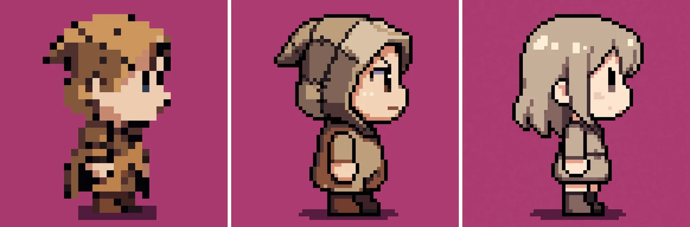
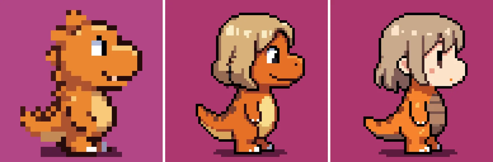
Round 2: one reference at a time
With a single character reference and no style image, identity held: the Emissary kept its spotted hat and cloak, the Loomwright its blanket pile and shuttle, and a purple bean came out clean enough to keep as an enemy. I also tried two fallback workflows, a two-pass version and plain text-to-image. Both lost the character and drew generic hooded people.
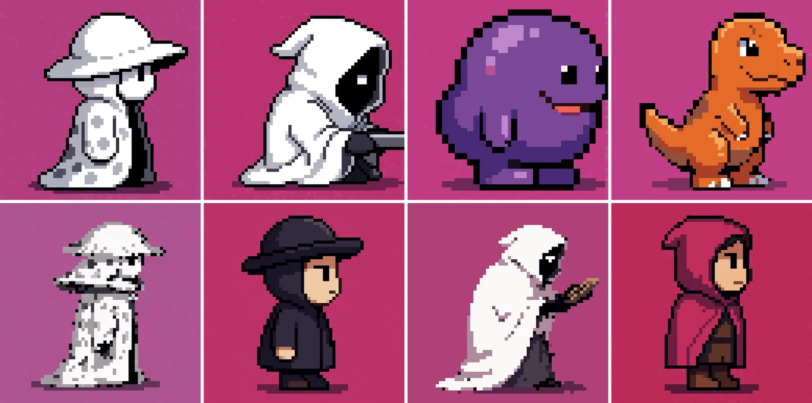
Round 3: describe the style instead
The fix for style was to stop showing it. A vision-language model now describes the style reference in words (“outline weight, flat shading and muted palette”), and that text goes into the prompt. Every character came out recognizable at 64 and 128 pixels and in one consistent style. The catch was color: the description pulled everyone toward the Fiberkin’s browns, so Bloby lost its purple and the dino its orange unless the recipe says to keep the source colors.
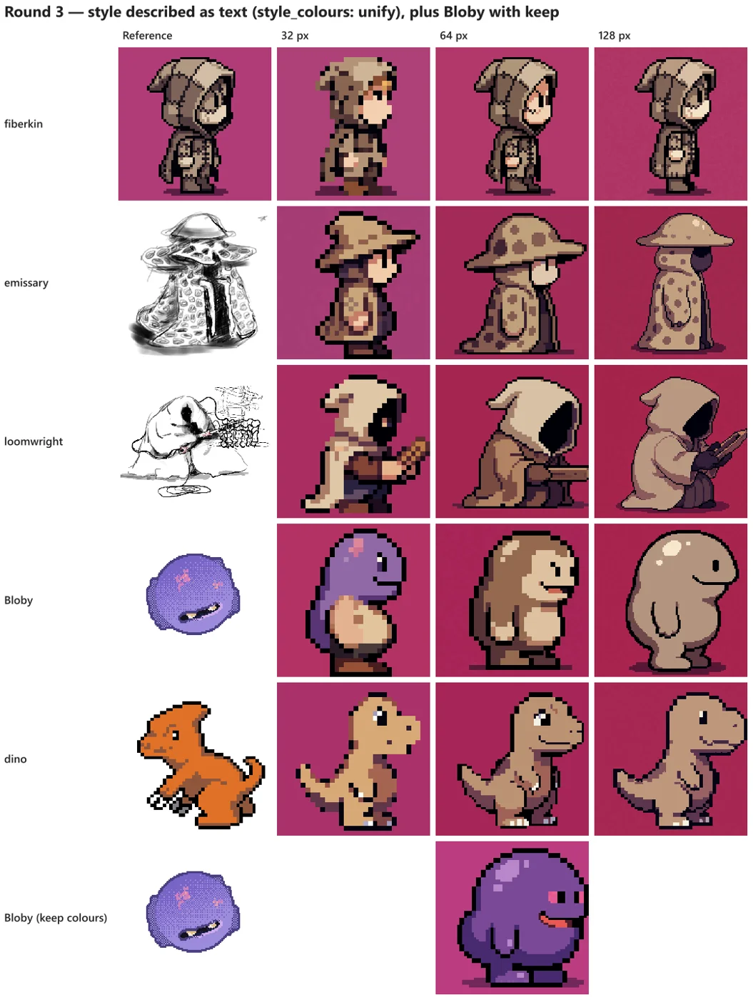
32 pixels was the weak size every round, so Fiber’s characters are 64 or 128.
Getting the face back
The Fiberkin’s face is fabric with a button eye. The model kept giving it a peach human face instead. A more explicit prompt alone did nothing. Weighting the reference more heavily removed the human face, and handing the model the draft’s own palette removed the skin tones. Both together came closest to the original.
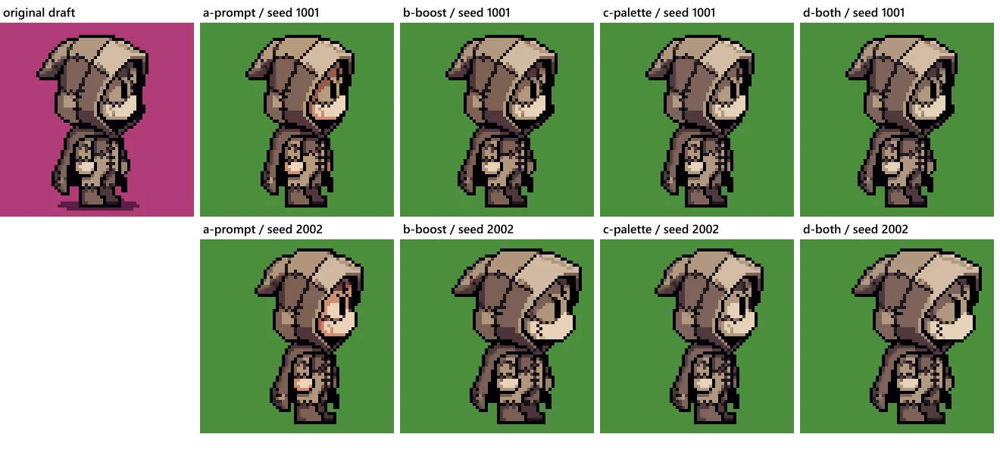
Making it move
A player sprite needs to walk, jump, attack and more, so I also spiked turning a sprite into animation with Wan 2.2 image-to-video, using settings from the MIT-licensed pixel-video-sprites project.
Text prompts: good walk, terrible everything else
A text prompt was enough for a walk: on model, legs alternating. The attack started with a fine wind-up, then the Fiberkin fell over, rolled, and ended up facing the camera. The jump left the top of the frame, shrank as if the camera pulled back, and landed facing the camera too.
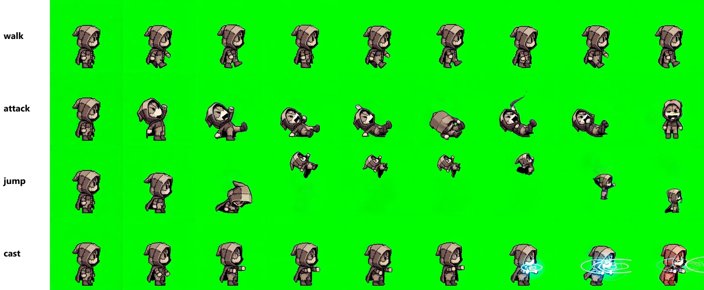
A reference clip: the cloak throws the punch
For actions with timing, I drove the motion from a short reference clip of a one-two punch. Identity held much better, and turning the pose strength up got full punches on the beats. But the arms came out long, thin and human-length. Worse, the wrong part of the body moved: the Fiberkin’s real arm, a pale sleeve ending in a round ball hand, stayed at its side while the top of the cloak did the punching. The model rebuilds the body from the human in the clip, so it maps a human arm onto whatever sits where a human arm would be.
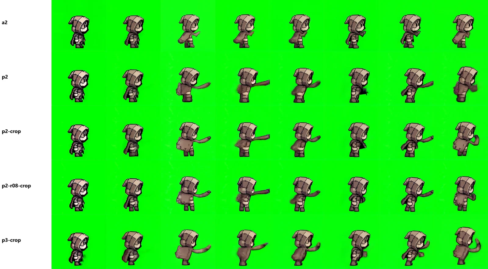
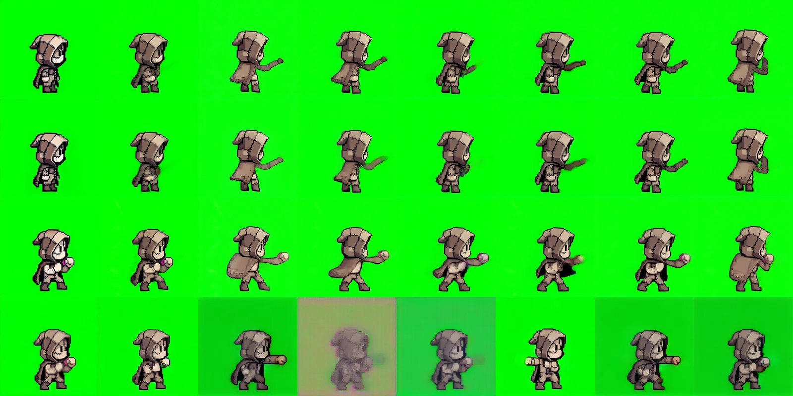
Key poses and in-betweens
What finally worked was going back to stills. The static pipeline drew three key poses, guard, jab and cross, with the arm named explicitly in the prompt, and they came out on model. Then the video model only had to fill in the frames between two keys.
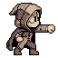
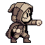
Even that took a sweep, because the gap between keys matters. At 5 frames the in-betweens collapsed into washed-out mush. At 9 they popped between poses and the background color drifted. At 33 the model had so much freedom that the arm swung out backwards into a T-pose before punching. Seventeen frames was the sweet spot.
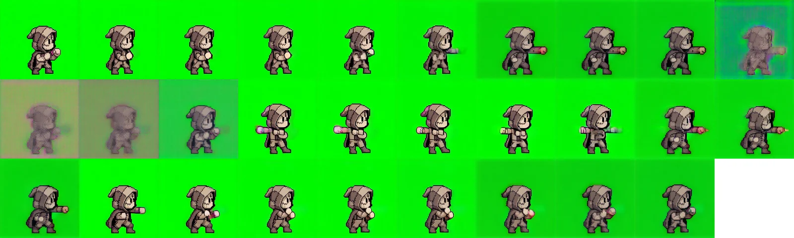
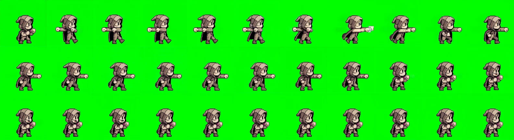
Back to pixel art
Video frames are soft, not pixel art. The last stage redraws each frame with the pixel model at low strength and then snaps every frame to one shared palette, the base sprite’s nine colors. That brings back hard pixels and a clean outline, pulls the face back toward the button eye, and keeps flicker low. It also needed a fix for the green screen: the refiner darkened the key green, so plain chroma keying left green specks until the keying rule was loosened. Feet and body get pinned to a baseline so the sprite doesn’t drift while it moves.
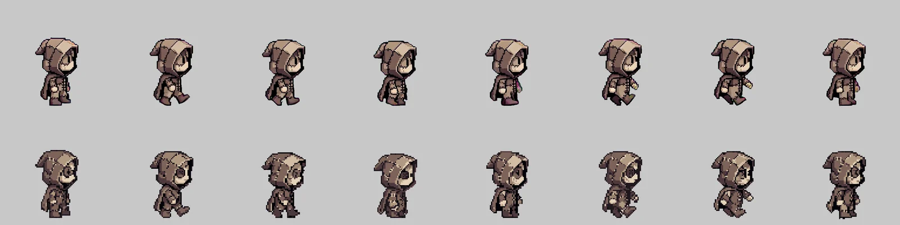
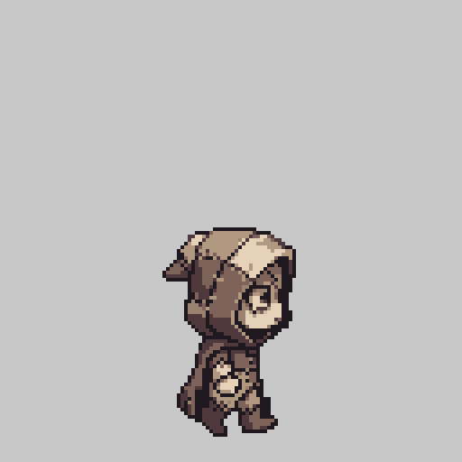
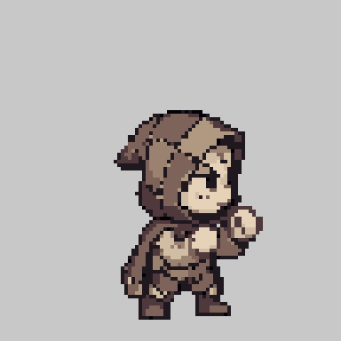
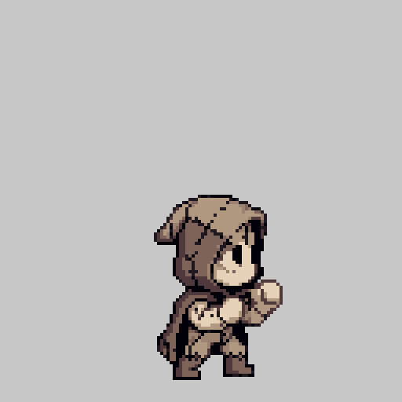
Where it lands
The pipeline gets a character from sketch to an on-model, in-style draft in a couple of minutes, and gets a simple animation most of the way there. It doesn’t get it all the way. Faces creep back, stray pixels survive the palette snap, and outlines break. In a lot of cases I needed to clean up the sprites by hand, and that’s where Aseprite comes into the workflow: generate the draft, then fix it pixel by pixel like any other sprite before it goes in the game.